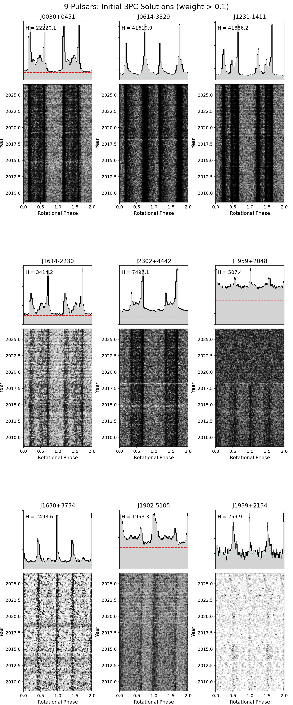
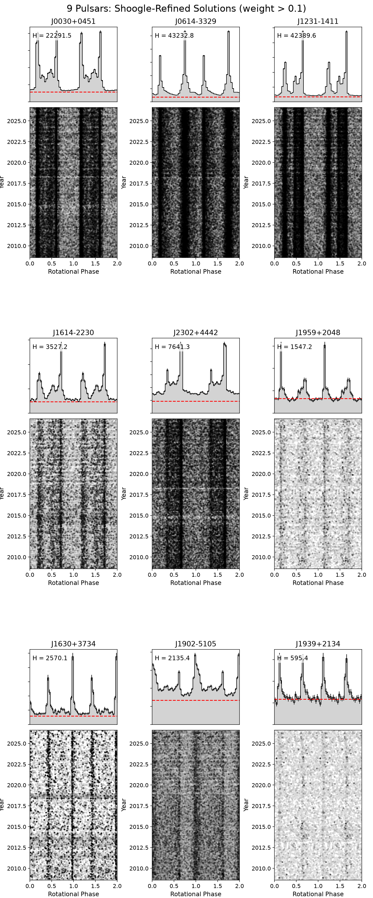
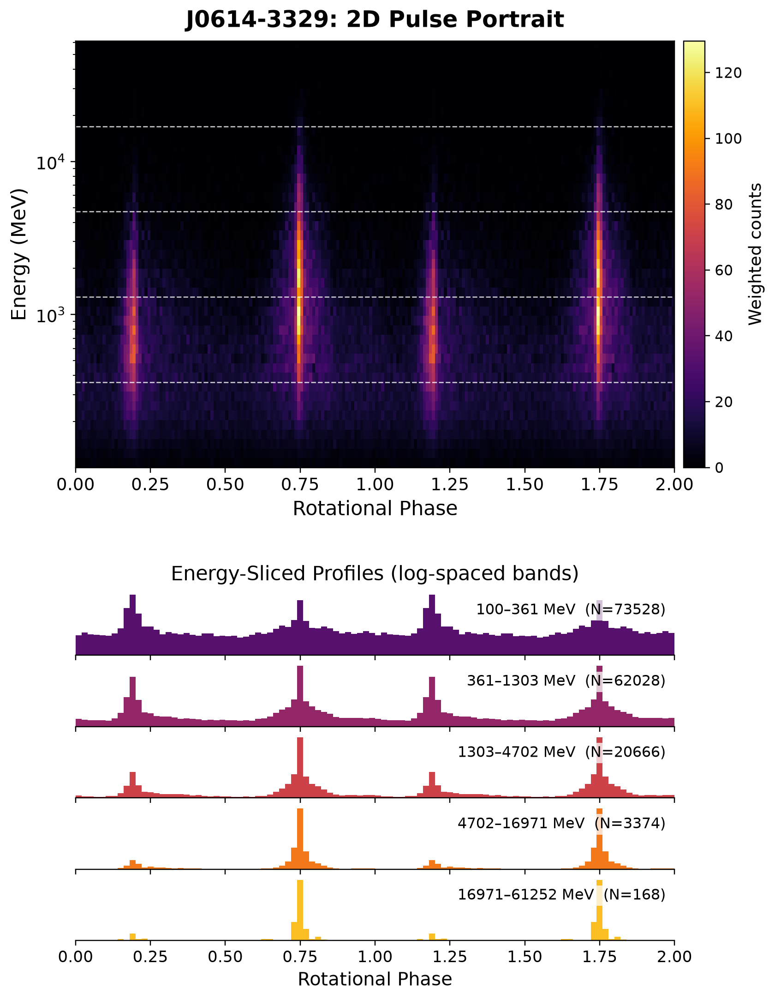
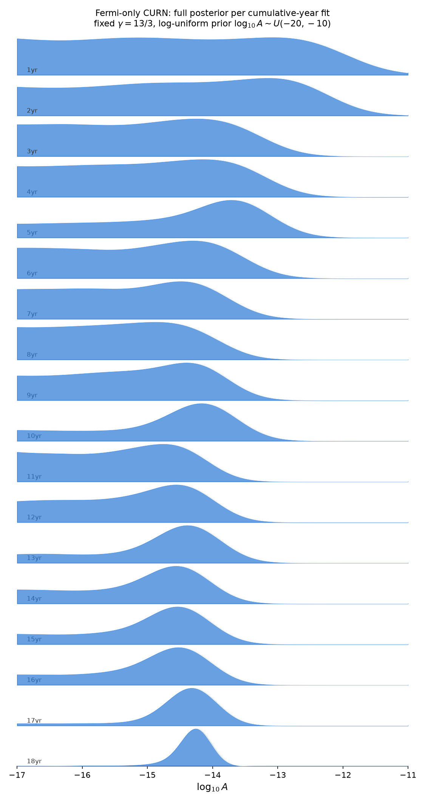
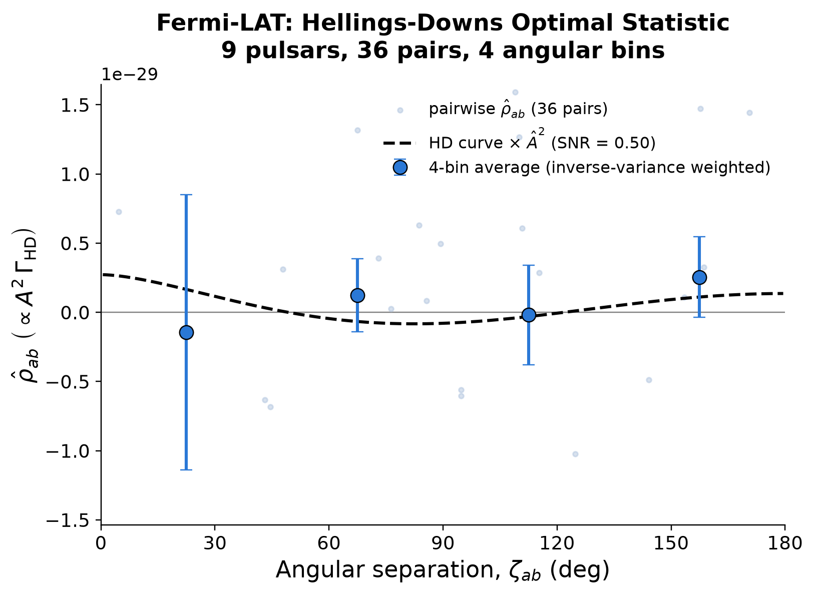
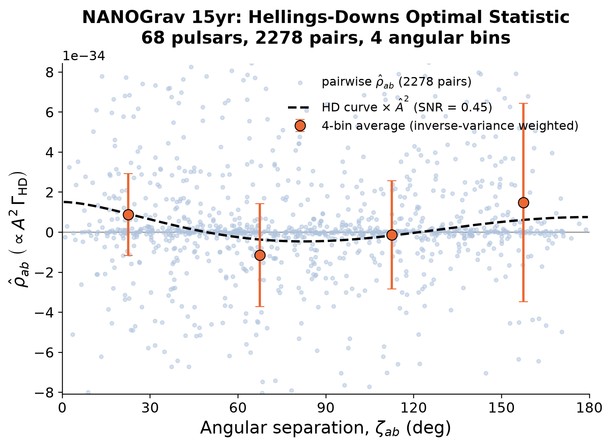

Updated Timing Solution
Here are the phase-time plots & integrated pulse profiles for the nine pulsars used here.
Most of them were just small updates, but PSR J1959+2048 become fully phase connected after shoogle tuning.


2D Pulse Portraits
Here's a sample of the 2-D pulse profile & some slices across. This allows us to get all the information from each photon.
E.g. most of the pulsars are more peaked at higher energy, so a high energy photon can provide much more info than a low energy one.

Is the Signal Real?
If we process the data every year or so, assuming a fixed $\gamma=13/3$ we see the posterior distribution of the strain A evolve.
We nicely match the Fermi team's published upper limit at 12.5 years of ~$A < 1 \times 10^{-14}$, and see it tighten as we add more data.
This is at least consistent with the signal being real.

Hellings-Down Curve
Sadly, the Fermi data alone is not yet robust enough to actually see the expected Hellings-Down expected correlation in pulsar pairs across the sky:

This is expected, as even in the much more constraining NANOGrav data, the curve is barely detected:
